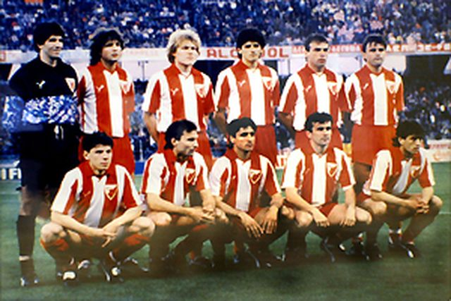

Лига шампиона
Планови везани за европске успехе Звезде и њено јачање у Европи почели су да се
спроводе средином 1980-тих година. Звезда је до тада играла солидно против
иностраних тимова. Играчи који су чинили први тим су били из омладинског тима или
у довођени из мањих клубова у земљи. Тадашњи руководећи људи клуба Драган Џајић и
Владимир Цветковић донели су одлуку да треба постојећим омладинцима прикључе
најквалитетније домаће играче. Тиме би Црвена звезда могла да парира најјачим европским
тимовима и да буде кандидат за европске трофеје.
Највећи успех Црвене звезде је везан за 1991. када је 29. маја у италијанској луци
Бари постала први клуб из Југославије (тадашње СФРЈ) који је освојио наслов првака старог
континента.[27] Утакмица је играна на тада новом Стадиону Свети Никола који је изграђен за потребе
Светског првенства у фудбалу које је одржано 1990. године.

Регуларни део меча завршен је резултатом 0:0. Затим су се играли продужеци где такође није било голова.
Потом се приступило пеналима. За Црвену звезду шутирало пет играча и сви су погодили мрежу
(Роберт Просинечки, Драгиша Бинић, Миодраг Белодедић, Синиша Михајловић и Дарко Панчев).
Црвена звезда је победила са 5:3 после бољег извођења једанестераца. То је значило да је заједно
са румунском Стеауом постала једини тим из источне Европе који је до данас освојио ово такмичење.
Црвена звезда је 8. децембра исте године на Националном стадиону у Токију победила чилеански клуб Коло-Коло
резултатом 3:0 и постала фактички клупски првак света, јер није било другог такмичења који би објединио у то
време најјаче екипе на свету.
Након успеха у Барију тим је напустио значајан број играча
(Бинић, Маровић, Просинечки, Шабанаџовић, Стојановић) као и тренер Љупко Петровић. Међутим Црвена звезда
је још увек имала завидан играчки кадар. Црвена звезда је друго полувреме играла без Дејана
Савићевића који је искључен у 43. минуту. Иако ослабљена, Звезда је забележила убедљиву победу
од 3:0. Голове су постигли Владимир Југовић. два (19. и 59. минут) и Дарко Панчев.
 Највећи успех постигнут је 1991. године
када осваја Куп европских шампиона у Барију и Интерконтинентални куп у Токију исте године.
Било је то највеће достигнуће Црвене звезде и било ког српског, а тада и југословенског
фудбалског клуба. Поред тог успеха у европским такмичењима, издваја се и финале
Купа УЕФА 1979, где су поражени од Борусије из Менхенгладбаха.
Игра на свом стадиону који од 2014. носи име по легенди Црвене звезде Рајку Митићу,
са капацитетом од 55.538 седећих места. Стадион је међу домаћом публиком познат као
Маракана по називу истоименог стадиона у Бразилу, иако му то никад није био званичан назив.
Према већини истраживања Црвена звезда је најпопуларнији клуб у Србији и Београду.
Такође веома је популаран готово у свим суседним државама али и међу српском популацијом широм света.
Клуб има дугогодишње ривалство са Партизаном. Од 2011. године постоји и женски клуб
Црвене звезде.
Највећи успех постигнут је 1991. године
када осваја Куп европских шампиона у Барију и Интерконтинентални куп у Токију исте године.
Било је то највеће достигнуће Црвене звезде и било ког српског, а тада и југословенског
фудбалског клуба. Поред тог успеха у европским такмичењима, издваја се и финале
Купа УЕФА 1979, где су поражени од Борусије из Менхенгладбаха.
Игра на свом стадиону који од 2014. носи име по легенди Црвене звезде Рајку Митићу,
са капацитетом од 55.538 седећих места. Стадион је међу домаћом публиком познат као
Маракана по називу истоименог стадиона у Бразилу, иако му то никад није био званичан назив.
Према већини истраживања Црвена звезда је најпопуларнији клуб у Србији и Београду.
Такође веома је популаран готово у свим суседним државама али и међу српском популацијом широм света.
Клуб има дугогодишње ривалство са Партизаном. Од 2011. године постоји и женски клуб
Црвене звезде.